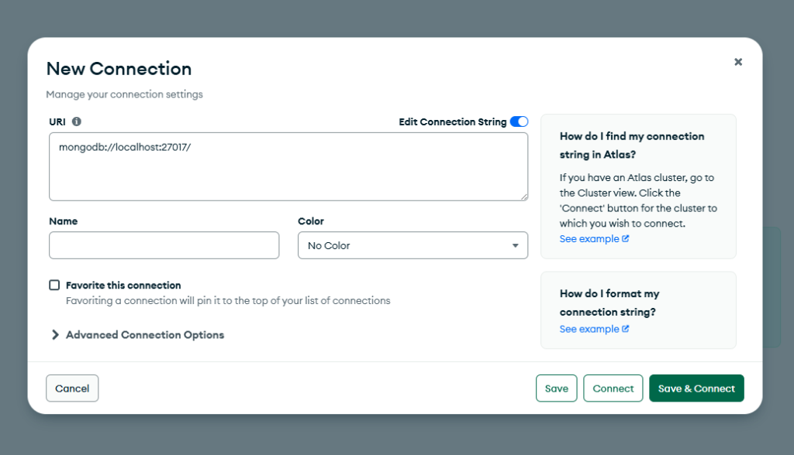
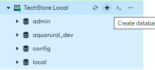
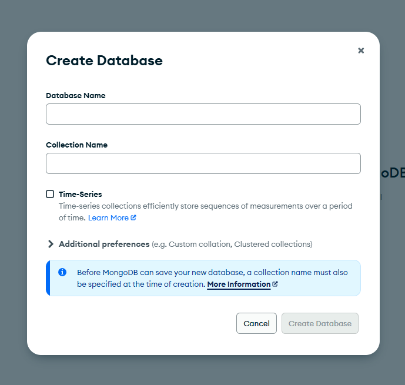

TechStore Pro gana su base de datos local
SENA ADSO · Ficha 3229944 · Octubre 2026
TechStore deja de depender de internet para desarrollar. Instalas MongoDB en tu computador, lo miras con Compass, y con una variable del .env decides si el backend usa tu base local o Atlas. Un script (seed.js) la llena con el catálogo cuando haga falta.
Antes de empezar: verifica lo que ya tienes
Esta sesión se apoya en cosas que ya hiciste en la S10 (Atlas y Compass) y en la S12 (el backend con Mongoose). No las repitas si ya las tienes: verifícalas. Si alguna falta, hazla con lo que dice la última columna y sigue. Solo el servidor de MongoDB (última fila) es nuevo para todos.
| Qué necesitas | Cómo verificarlo | Si no lo tienes |
|---|---|---|
| Un cluster de Atlas con la base techstore y sus 6 productos (S10) | En Atlas, Database → Browse Collections muestra techstore → productos con 6 documentos | Repite en la guía de la S10 el paso de crear la base y la colección, e inserta de nuevo los 6 productos |
| Acceso de red 0.0.0.0/0 en Atlas (S10) | En Atlas, Security → Network Access muestra 0.0.0.0/0 con estado Active | Agrégala con Add IP Address → Allow Access from Anywhere |
| MongoDB Compass (S10) | Abre Compass: si abre, lo tienes | Instálalo desde mongodb.com/products/tools/compass: en Windows el .msi (siguiente, siguiente, instalar) y en Mac el .dmg, arrastrando la app a Aplicaciones |
| Una conexión de Atlas en Compass (S10) | En la columna izquierda de Compass hay una conexión con el nombre de tu cluster; al pulsarla conecta y muestra techstore | Créala con + Add new connection y pega tu cadena de Atlas. El campo URI debe empezar exactamente con mongodb+srv://, sin comillas ni prefijo NOMBRE= |
| El backend conectado a Atlas con Mongoose (S12) | En backend/ ejecuta npm run dev: la terminal dice que conectó a MongoDB Atlas y localhost:3000/api/productos muestra los productos | Repite la guía de la S12 hasta que conecte. Esta sesión parte de un backend que ya funciona |
| MongoDB Community Server (el motor local) (nuevo hoy) | Windows con instalador: Get-Service MongoDB muestra Running. Windows con ZIP o Mac con tgz: hay una terminal abierta con mongod corriendo. Mac con Homebrew: brew services list muestra mongodb-community en started. En todos los casos sirve conectar Compass a mongodb://127.0.0.1:27017 | Se instala en el Paso 1 |
Get-Service MongoDB va sin punto al final.Instalar MongoDB Community Server
MongoDB Atlas es un servidor de MongoDB que alguien más mantiene en internet. MongoDB Community Server es el mismo programa, gratis, instalado en tu computador. Con el instalador queda corriendo en segundo plano, como un servicio; si el computador no te deja instalar programas, hay una versión portable (ZIP en Windows, tgz en Mac) que no pide permisos. Hazlo primero: la descarga y la instalación son lo más lento de la sesión.
Elige tu sistema operativo y sigue solo esa parte. Necesitas la versión 7.0 o superior.
mongodb.com/try/download/community y descarga el instalador: versión 7.0.x, plataforma Windows x64, paquete msi. Ejecútalo y en el asistente elige, en este orden: (1) aceptar la licencia, (2) tipo de instalación Complete, (3) en "Service Configuration" deja marcado Install MongoD as a Service con la opción Run service as Network Service user, (4) deja marcado Install MongoDB Compass y (5) Install. Si Windows pide permisos de administrador, acepta. Si no puedes aceptarlos, usa la Opción B.mongodb.com/try/download/community elige versión 7.0.x, plataforma Windows x64 y, en Package, la opción zip (no msi). Descarga el archivo y haz clic derecho, Extraer todo, en tu carpeta de usuario (la que se abre con C:Users u-usuario), no dentro de Documentos ni de OneDrive, porque la sincronización puede dañar los datos. Dentro queda una carpeta con un nombre largo como mongodb-win32-x86_64-windows-7.0.x: renómbrala a mongodb, para que la ruta sea corta y estable. Dentro de ella debe existir la carpeta bin, y dentro de bin el archivo mongod.exe.Abre PowerShell (no hace falta como administrador) y crea la carpeta donde MongoDB guardará los datos. Ajusta la primera línea si extrajiste el ZIP en otro lugar:
$mongo = "$HOME\mongodb" New-Item -ItemType Directory -Force "$HOME\mongodata" & "$mongo\bin\mongod.exe" --version
db version v7. o db version v8.. Si dice que no encuentra el archivo, la carpeta mongodb no está donde indica la primera línea: revisa dónde la extrajiste.Ahora arranca el servidor. A diferencia del instalador, aquí no hay servicio: el servidor corre mientras esta terminal siga abierta.
& "$HOME\mongodb\bin\mongod.exe" --dbpath "$HOME\mongodata" --bind_ip 127.0.0.1
--bind_ip 127.0.0.1 ya limita el servidor a tu propio computador.brew.sh y pide contraseña de administrador). En la Terminal, una línea a la vez:brew tap mongodb/brew brew update brew install mongodb-community@7.0 brew services start mongodb-community@7.0
mongodb.com/try/download/community elige versión 7.0.x, esa plataforma y, en Package, la opción tgz. Al terminar, haz doble clic en el archivo descargado: se crea una carpeta con un nombre largo como mongodb-macos-aarch64-7.0.x. Renómbrala a mongodb y muévela a tu carpeta de usuario (la de la casita en Finder). Dentro debe existir la carpeta bin.Abre la Terminal y ejecuta, una línea a la vez. La segunda quita el bloqueo que macOS pone a lo descargado de internet; sin ella, puede aparecer el aviso "no se puede abrir porque no se puede verificar al desarrollador":
mkdir -p ~/mongodata xattr -dr com.apple.quarantine ~/mongodb ~/mongodb/bin/mongod --version
db version v7. o db version v8.. Si dice No such file or directory, la carpeta mongodb no está en tu carpeta de usuario o bin quedó dentro de otra carpeta: revisa el nombre y la ubicación.Ahora arranca el servidor. No hay servicio: corre mientras esta ventana de Terminal siga abierta.
~/mongodb/bin/mongod --dbpath ~/mongodata --bind_ip 127.0.0.1
--bind_ip 127.0.0.1 ya limita el servidor a tu propio equipo.Comprueba que el servidor quedó corriendo.
Get-Service MongoDB
brew services list
Si usaste la Opción B (ZIP): no hay servicio, así que Get-Service MongoDB dirá que no existe y eso es lo esperado. Abre una segunda PowerShell, sin cerrar la que tiene mongod, y ejecuta:
Test-NetConnection 127.0.0.1 -Port 27017
Test-NetConnection, la línea TcpTestSucceeded dice True. En la terminal que corre mongod verás una línea con Waiting for connections y el puerto 27017.Si usaste la Opción B en Mac (tgz): brew services list no mostrará MongoDB y eso es lo esperado. Abre una segunda ventana de Terminal, sin cerrar la que tiene mongod, y ejecuta:
nc -zv 127.0.0.1 27017
Connection to 127.0.0.1 port 27017 [tcp/*] succeeded!. Si dice Connection refused, el servidor no está corriendo: vuelve a la ventana de mongod y revisa si se detuvo con un error.Get-Service MongoDB muestra el estado Running. En Mac, brew services list muestra mongodb-community con el estado started. Si dice Stopped o none, reinicia el computador y vuelve a mirar: el servicio arranca solo.net start MongoDB. En Mac ejecuta brew services start mongodb-community@7.0. Si usaste la Opción B (ZIP en Windows o tgz en Mac), la terminal con mongod se cerró o se detuvo: ábrela de nuevo y repite el comando de arranque.Ver la base de datos con MongoDB Compass
Hasta ahora la base de datos era invisible: se llenaba y se leía solo desde el código. MongoDB Compass es la herramienta gráfica oficial: se conecta a un servidor y muestra sus bases como carpetas. Si ya lo tienes instalado, pasa directo al punto 2. Primero lo usas en una base de práctica que vas a borrar al final.
Compass lo instalaste en la S10 (Paso 0). Ábrelo: si abre, sigue al punto 2. Si no lo tienes, instálalo ahora desde mongodb.com/products/tools/compass: en Windows el .msi, normalmente (siguiente, siguiente, instalar), y en Mac abre el .dmg y arrastra Compass a la carpeta Aplicaciones. Si Windows pide contraseña de administrador, en la misma página de descarga elige la versión zip de Compass (no la msi) y ejecútala desde la carpeta donde la extraigas. Si el Mac pide contraseña al arrastrar Compass a Aplicaciones, crea una carpeta Aplicaciones dentro de tu carpeta de usuario y arrástralo allí.
Conéctate a tu servidor local. Pulsa el botón verde + Add new connection de la pantalla de bienvenida (o el ícono + junto a "CONNECTIONS" en la columna izquierda). Se abre la ventana New Connection:

mongodb://localhost:27017/ ya escrito.| Campo | Qué escribir |
|---|---|
| URI | mongodb://127.0.0.1:27017 |
| Name | TechStore Local: el nombre con el que aparecerá en tu lista de conexiones |
| Color | Elige verde. En el Paso 6 la conexión de Atlas llevará otro color, para no confundirlas |
| Advanced Connection Options | No se modifica: el entorno local no lo necesita |
Pulsa el botón verde oscuro Save & Connect: Compass guarda la conexión y entra de inmediato.
localhost y con 127.0.0.1. En esta guía usamos 127.0.0.1 en todas partes para acostumbrarte a una dirección que siempre funciona: en el .env del Paso 3 sí importa, porque con algunas versiones de Node (17 a 19) localhost se resuelve a la dirección IPv6 (::1) y MongoDB solo atiende IPv4 por defecto.TechStore Local y, al desplegarla, la lista de bases del servidor. Siempre verás admin, config y local: son internas de MongoDB, no las toques. Si ves otras bases que no reconoces, es normal: Compass lista todo lo que ya existe en el MongoDB de tu computador. Aún no existe techstore: la creará el propio backend en el Paso 3, la primera vez que se conecte en modo local. Si sale ECONNREFUSED, el servidor está apagado: en Windows, abre el Símbolo del sistema como administrador y ejecuta net start MongoDB; en Mac, brew services start mongodb-community@7.0.Crea una base de práctica para ver cómo se organiza todo. En la columna izquierda pasa el mouse sobre TechStore Local y pulsa el botón circular +, que muestra el mensaje Create database:

En la ventana Create Database escribe:

| Campo | Valor |
|---|---|
| Database Name | practica (en minúsculas, sin espacios) |
| Collection Name | notas |
Pulsa el botón verde Create Database. Compass abre la colección notas, vacía. Pulsa ADD DATA ▾ → Insert document. Si la ventana muestra campos sueltos, pulsa el ícono de llaves { } de la esquina superior derecha para pasar a modo JSON, borra todo lo que haya y pega:
{
"titulo": "Mi primera nota",
"hecha": false
}Pulsa Insert.
_id que tú no escribiste: lo crea MongoDB solo, y es el mismo _id con el que busca GET /api/productos/:id en S29. En la barra Filter escribe { "hecha": false } y pulsa Find: aparece tu nota. Con { "hecha": true } no aparece nada.Edita y borra, para saber hacerlo con cuidado. Pasa el mouse sobre tu documento y pulsa el lápiz: cambia false por true y pulsa Update. Luego, en la columna izquierda, pasa el mouse sobre la base practica y elige Drop database (el ícono del bote de basura o el menú de los tres puntos ⋯, según tu versión de Compass). Escribe el nombre de la base para confirmar.
practica desaparece de la lista._id, no por un texto libre que pueda repetirse.Dos entornos en el .env y una línea en server.js
Hoy server.js lee una sola variable, MONGODB_URI, que apunta a Atlas. Se renombra y se agrega una segunda dirección, la local, más un interruptor, DB_MODO, que decide cuál se usa. El código de las rutas, los modelos y el frontend no cambian.
Abre backend/.env. Los valores (después del =) no se tocan: solo cambia el nombre de una variable y se agregan dos líneas. Este es el cambio, con ... en lugar de tus datos:
MONGODB_USERNAME=... MONGODB_PASSWORD=... MONGODB_URI=mongodb+srv://... PORT=3000 JWT_SECRET=...
MONGODB_USERNAME=... MONGODB_PASSWORD=... DB_MODO=atlas MONGODB_URI_ATLAS=mongodb+srv://... MONGODB_URI_LOCAL=mongodb://127.0.0.1:27017/techstore PORT=3000 JWT_SECRET=...
| Parte | Qué hace |
|---|---|
| MONGODB_URI → MONGODB_URI_ATLAS | Solo se cambia el nombre. Que diga "ATLAS" evita confundirla con la local. El valor (tu cadena mongodb+srv://...) queda exactamente igual |
| DB_MODO=atlas | El interruptor. Con atlas todo funciona como hasta hoy; con local el backend usa la base de tu computador. Empieza en atlas para no cambiar nada todavía |
| MONGODB_URI_LOCAL=mongodb://127.0.0.1:27017/techstore | mongodb:// es el formato clásico (sin usuario ni clave), 127.0.0.1 es este computador, 27017 el puerto y techstore el nombre de la base. Si la base no existe, MongoDB la crea sola al guardar el primer documento |
.env cualquier línea que no tenga la forma NOMBRE=valor (por ejemplo un texto o un JSON que se pegó por error). Y recuerda: el .env nunca se comparte ni se sube a GitHub (ya está en .gitignore) porque tiene contraseñas y claves. No muestres tu .env en pantalla compartida.Si algo falla, estos son los errores más comunes de esta parte (varios ya los viste en la S12):
| Lo que ves | Causa | Qué hacer |
|---|---|---|
| The uri parameter to openUri() must be a string, got "undefined" | El nombre de la variable que server.js busca no existe en el .env: no se renombró MONGODB_URI, hay un error de tipeo, o DB_MODO está mal escrito | Revisa que existan exactamente MONGODB_URI_ATLAS y MONGODB_URI_LOCAL, y que DB_MODO sea local o atlas. Guarda y escribe rs en la terminal del backend |
| Conecta, pero la tienda sale vacía o con otros datos | A la cadena le falta el nombre de la base al final (/techstore). Sin él, MongoDB usa una base llamada test | Comprueba que la cadena local y la de Atlas terminan en /techstore |
| MongoServerError: bad auth | Usuario o contraseña incorrectos en la cadena de Atlas | Revisa la cadena; si hace falta, restablece la contraseña en Atlas |
| MongooseServerSelectionError | En local, el servidor de MongoDB está apagado. En Atlas, tu IP no está permitida | Local: revisa el servicio (Paso 1). Atlas: Network Access con 0.0.0.0/0 en Active |
Abre backend/server.js. La sección 4 conecta con la base. Este es el bloque tal como está hoy y como debe quedar (el resto del archivo no se toca):
// 4. Conectar con MongoDB Altla mongoose.connect(process.env.MONGODB_URI) .then(() => console.log('✅ Conectado a MongoDB Atlas')) .catch((err) => console.error('❌ Error de conexión:', err));
// 4. Conectar con MongoDB: local o Atlas, según DB_MODO en el .env const modo = process.env.DB_MODO === 'local' ? 'local' : 'atlas'; const uri = modo === 'local' ? process.env.MONGODB_URI_LOCAL : process.env.MONGODB_URI_ATLAS; mongoose.connect(uri) .then(() => console.log('✅ Conectado a MongoDB (' + modo + ')')) .catch((err) => console.error('❌ Error de conexión:', err));
Las líneas con la barra amarilla son las nuevas o las que cambian.
// 4. Conectar con MongoDB Altla mongoose.connect(process.env.MONGODB_URI) .then(() => console.log('✅ Conectado a MongoDB Atlas'))
// 4. Conectar con MongoDB: local o Atlas, según DB_MODO en el .env const modo = process.env.DB_MODO === 'local' ? 'local' : 'atlas'; const uri = modo === 'local' ? process.env.MONGODB_URI_LOCAL : process.env.MONGODB_URI_ATLAS; mongoose.connect(uri) .then(() => console.log('✅ Conectado a MongoDB (' + modo + ')'))
| Parte | Qué hace |
|---|---|
| process.env.DB_MODO | Lee la variable del .env (la carga dotenv, en la primera línea de server.js) |
| const modo = process.env.DB_MODO === 'local' ? 'local' : 'atlas' | Un operador ternario: si la variable vale exactamente "local", modo es "local"; cualquier otra cosa (incluso si falta la variable) es "atlas". Así, si alguien olvida la variable, el proyecto sigue funcionando como siempre |
| const uri = modo === 'local' ? ...LOCAL : ...ATLAS | Elige cuál de las dos direcciones usar. Se escribe en varias líneas porque no cabe cómoda en una |
| mongoose.connect(uri) | Es la misma línea de antes, pero conectando a la dirección elegida en vez de a una fija |
| ' Conectado a MongoDB (' + modo + ')' | El mensaje de arranque ahora dice a cuál base se conectó. Es tu confirmación de que el interruptor funcionó |
.env se lee una sola vez, al arrancar el servidor. nodemon NO reinicia solo cuando cambias el .env: solo vigila los archivos de código. Para que un cambio de DB_MODO surta efecto, en la terminal donde corre el backend escribe rs y pulsa Enter (es el comando de reinicio manual de nodemon), o detén con Ctrl + C y vuelve a iniciar con npm run dev. Si olvidas reiniciar, el backend sigue usando la base de antes.Un detalle útil: para saber a qué base está conectado el backend sin mirar la terminal, la ruta de prueba (/) también lo va a decir. En server.js, busca la sección 9 (ruta de prueba) y cámbiala así:
app.get('/', (req, res) => { res.json({ mensaje: 'Servidor TechStore Pro ✅' }); });
app.get('/', (req, res) => { res.json({ mensaje: 'Servidor TechStore Pro ✅', baseDeDatos: modo }); });
Las líneas con la barra amarilla son las nuevas o las que cambian.
res.json({ mensaje: 'Servidor TechStore Pro ✅' });
res.json({ mensaje: 'Servidor TechStore Pro ✅', baseDeDatos: modo });
| Parte | Qué hace |
|---|---|
| baseDeDatos: modo | Agrega un campo a la respuesta con el valor de la variable modo, que vale "local" o "atlas" |
| La variable modo ya existe | Se declaró con const en la sección 4, que está antes en el archivo, así que esta ruta puede usarla |
| Se agrega una coma | En un objeto, los campos se separan con comas: mensaje: ..., y luego baseDeDatos: ... |
nodemon sí reinicia solo al guardar. Esta vez no tienes que hacer nada más.Primero comprueba que nada se rompió. Con DB_MODO=atlas guardado, el backend corriendo (npm run dev en backend/) y reiniciado si hacía falta:
npm run dev
Para ver la tienda también necesitas el frontend de React corriendo. Ábrelo en una segunda terminal (si ya lo tenías abierto de la sesión anterior, no hace falta repetirlo):
npm run dev
F5).localhost:3000 en el navegador muestra "baseDeDatos":"atlas" y la tienda en localhost:5173/productos muestra tus productos de siempre.Ahora cambia solo la línea DB_MODO=atlas por DB_MODO=local, guarda con Ctrl + S, y en la terminal del backend escribe rs y Enter.
localhost:3000 muestra "baseDeDatos":"local" y, al recargar localhost:5173/productos, la tienda aparece vacía ("No se encontraron productos…"). Es lo esperado: la base local es nueva y no tiene ningún producto. Eso es lo que arregla el paso siguiente.TechStore Local pulsa el ícono Refresh databases (las flechas circulares): ahora aparece la base techstore. La creó el backend al conectarse, junto con una colección vacía por cada modelo. La verás completa en el Paso 4.::1, la dirección dice localhost en lugar de 127.0.0.1. Si la terminal dice (atlas) aunque escribiste local, olvidaste reiniciar con rs.Sembrar el catálogo con un script
Una base nueva está vacía, y llenarla a mano producto por producto sería lento y repetir el trabajo en cada computador. Un seed (semilla) es un script que la llena con datos iniciales conocidos, las veces que haga falta. Usa el productos.json que ya está en frontend/data/. No hace falta crear nada a mano: la base techstore y sus colecciones ya las creó el backend al conectarse en modo local (Paso 3), pero están vacías. El seed solo las llena.
Crea backend/seed.js con este contenido completo:
// Siembra la base LOCAL con el catálogo de frontend/data/productos.json // Uso: DB_MODO=local en el .env y luego npm run seed require('dotenv').config(); const mongoose = require('mongoose'); const Producto = require('./models/Producto'); const productos = require('../frontend/data/productos.json'); async function sembrar() { // Freno de seguridad: el seed BORRA los productos, así que nunca corre contra Atlas if (process.env.DB_MODO !== 'local') { console.error('❌ El seed solo corre con DB_MODO=local en el .env. No se hizo nada.'); process.exit(1); } await mongoose.connect(process.env.MONGODB_URI_LOCAL); await Producto.deleteMany({}); await Producto.insertMany(productos); console.log('✅ Productos sembrados en la base local: ' + productos.length); await mongoose.disconnect(); } sembrar().catch((err) => { console.error('❌ Error en el seed:', err.message); process.exit(1); });
| Parte | Qué hace |
|---|---|
| require('dotenv').config() | Carga el .env, igual que en server.js: este script es un programa aparte y necesita leerlo por su cuenta |
| require('../frontend/data/productos.json') | Node puede importar un archivo JSON directamente. ../ sube de backend/ a la carpeta del proyecto y entra a frontend/data/. Resultado: un arreglo con los 6 productos |
| if (process.env.DB_MODO !== 'local') | El freno de seguridad. El seed borra los productos antes de insertarlos, así que si por error se ejecutara contra Atlas borraría lo de producción. Si el modo no es "local", imprime un aviso y termina |
| process.exit(1) | Termina el programa. El 1 significa "terminó con error" (un 0 sería éxito) |
| mongoose.connect(process.env.MONGODB_URI_LOCAL) | Se conecta siempre a la local, nunca a la de Atlas: la dirección no depende de un condicional, así no hay forma de equivocarse |
| await Producto.deleteMany({}) | Borra todos los documentos de la colección productos. El {} significa "sin filtro: todos". Por esto el seed se puede correr muchas veces sin duplicar |
| await Producto.insertMany(productos) | Inserta los 6 productos de una sola vez, validándolos con el mismo modelo que usa el backend |
| await mongoose.disconnect() | Cierra la conexión; sin esto, el programa se quedaría esperando y no terminaría |
| sembrar().catch(...) | sembrar es una función async (S24): si algo falla dentro, el .catch muestra el error y sale con código 1 |
Producto guarda id, icono, nombre, descripcion, precio e imagen. Cada documento sembrado recibe además un _id nuevo: por eso las direcciones de ficha de S29 (/productos/<_id>) de una base no sirven en la otra, ni después de volver a sembrar. Es normal.Para correr el seed con un comando corto, se agrega una línea al package.json de backend/, dentro de scripts. Ojo con la coma al final de la línea start:
"scripts": {
"dev": "nodemon server.js",
"start": "node server.js"
}, "scripts": {
"dev": "nodemon server.js",
"start": "node server.js",
"seed": "node seed.js"
},| Parte | Qué hace |
|---|---|
| "start": "node server.js", | Se agregó una coma al final: en un JSON, todos los elementos de una lista van separados por comas, menos el último |
| "seed": "node seed.js" | Define el comando npm run seed, que ejecuta node seed.js. Va sin coma porque ahora es el último |
Antes de sembrar, mira qué hay en la base. En Compass pulsa el ícono Refresh databases (las flechas circulares) junto a TechStore Local y despliega la base techstore:
| Colección en Compass | Para qué sirve | Documentos ahora |
|---|---|---|
| productos | El catálogo de la tienda (modelo Producto) | 0 |
| usuarios | Las cuentas de usuario (S30) | 0 |
| mensajes | Los mensajes del formulario de contacto (S27) | 0 |
| ordens | Los pedidos | 0 |
| transaccions | Los pagos de Wompi | 0 |
backend/models/. Si falta alguna, el backend no llegó a conectarse en local: revisa el Paso 3.ordens y transaccions se ven raros: Mongoose pone en plural el nombre de cada modelo con reglas del inglés (Orden pasa a ordens, Transaccion a transaccions). No es un error y no se cambia.Ahora mismo tu .env dice DB_MODO=local, porque así lo dejaste al final del Paso 3. Primero prueba el freno: cambia temporalmente esa línea a DB_MODO=atlas y guarda con Ctrl + S. No reinicies el backend: el seed es un programa aparte y lee el .env cada vez que se ejecuta. En una terminal dentro de backend/ (no hace falta detener el servidor):
npm run seed
DB_MODO=local y guarda enseguida, antes de seguir. Mientras el .env diga atlas, no edites ningún archivo de código: si nodemon reiniciara el backend en ese momento, arrancaría en atlas sin que lo notes.Con DB_MODO=local guardado otra vez, ejecuta el seed. Córrelo dos veces seguidas.
injected env y un consejo. La escribe dotenv (la librería que lee el .env) cada vez que se carga; no es un error.Trabajar en local sin tocar Atlas
Ya hay dos bases con el mismo catálogo y el interruptor para elegir. Ahora compruebas lo más importante: que lo que hagas en una no afecta a la otra.
Antes de probar, aprende la rutina para cambiar de entorno. Es siempre la misma y son tres pasos. La vas a repetir muchas veces en el resto de la Fase 5:
| Paso | Qué haces | Qué debes ver |
|---|---|---|
| 1. Cambiar el interruptor | En backend/.env pon DB_MODO=local o DB_MODO=atlas y guarda con Ctrl + S | La pestaña de .env en VS Code muestra una X y no un círculo blanco (●). Si ves el círculo, el archivo no está guardado: pulsa Ctrl + S |
| 2. Reiniciar el backend | En la terminal donde corre el backend escribe rs y pulsa Enter (o Ctrl + C y npm run dev) | La terminal vuelve a arrancar: "Servidor en http://localhost:3000" |
| 3. Confirmar | Lee el mensaje de arranque, o abre localhost:3000 en el navegador | "Conectado a MongoDB (local)" o "(atlas)", y "baseDeDatos" con el mismo valor |
.env y olvidar el paso 2. El backend sigue usando la base de antes y todo "parece" no funcionar. La señal para detectarlo es que el mensaje de la terminal no coincide con lo que escribiste en el .env.¿En qué entorno estoy? Tres señales, de la más rápida a la más completa:
| Señal | Cómo mirarla | Qué dice |
|---|---|---|
| Mensaje de arranque | La terminal del backend, al iniciar | "Conectado a MongoDB (local)" o "(atlas)" |
| La ruta de prueba | Abrir localhost:3000 en el navegador | "baseDeDatos":"local" o "atlas", el valor con el que arrancó el servidor |
| Compass | El ícono y el color de la conexión | Una laptop y color verde: TechStore Local. Un servidor y color rojo: TechStore Atlas. Ahí ves los datos de cada base |
¿Cuál uso y cuándo?
| Situación | Entorno | Por qué |
|---|---|---|
| Desarrollar y probar el día a día | local | No depende de internet y los datos de prueba no ensucian nada |
| Probar registro, login y pagos de prueba (S30 a S33) | local | Los usuarios y pedidos de prueba se quedan en tu computador |
| Correr npm run seed o borrar datos | local (obligatorio) | El seed borra datos: por eso se niega a correr en Atlas |
| Ver o publicar lo "real", o la demo final | atlas | Es la base que ve el público cuando el proyecto se publica |
Comprueba que tienes los dos servidores corriendo: el backend en la terminal 1 y el frontend de React en la terminal 2 (npm run dev dentro de frontend-react/, en localhost:5173). Si cerraste el frontend, ábrelo de nuevo. Después aplica la rutina de cambio (pasos 1 a 3 de arriba) con DB_MODO=local: el backend se reinicia con rs; el frontend no se toca.
localhost:5173/productos muestra tus 6 productos con sus fotos, el buscador, el orden y el modal, igual que antes. El frontend no cambió: sigue pidiendo localhost:3000/api/productos, y el backend ahora responde con la base local.Cambia un dato desde Compass. En la base techstore, colección productos, edita el documento del iPhone 15 Pro (el lápiz que aparece al pasar el mouse): cambia el campo precio a $1.234.567 y pulsa Update. Recarga la tienda. No escribas comillas: el valor de un campo de texto ya aparece entre comillas, y tú solo cambias lo que hay dentro de ellas.
DB_MODO=local ejecuta npm run seed y los 6 productos vuelven a su estado original. Para eso sirve un seed.Ahora vuelve a Atlas: aplica la rutina de cambio con DB_MODO=atlas y recarga la tienda.
_id, y cada base tiene _id distintos. Si en modo atlas copias la dirección de una ficha (/productos/6a72...) y cambias a modo local, esa dirección dirá "Producto no encontrado". No es un error: ese _id no existe en la otra base.DB_MODO=local: tus usuarios de prueba y pedidos de prueba no ensucian Atlas. Cambia a atlas solo cuando quieras ver o publicar lo "real".Llevar una colección de local a Atlas
Las dos bases no se comunican entre sí. Para mover datos hay que sacarlos a un archivo y meterlos en el otro lado. Compass lo hace con dos botones. Hoy lo practicas con una colección de prueba, para no tocar tus productos reales de Atlas.
Exporta desde la base local. En Compass, conectado a TechStore Local, abre techstore → productos y sigue esta secuencia:
| Qué hacer | Detalle |
|---|---|
| Pulsa EXPORT DATA ▾ y elige Export the full collection | Es el tercer botón de la barra de herramientas, dos casillas a la derecha del verde ADD DATA. Ruta alternativa: menú Collection → Export Collection |
| Deja todos los campos seleccionados y pulsa Select output | Así se exportan los 6 productos completos |
| En Select export file type deja marcado JSON | No CSV: el JSON conserva los tipos de dato y el _id |
| Pulsa Browse, elige el escritorio y llama al archivo productos_local.json | Después pulsa el botón verde Export |
... junto a "CONNECTIONS" exportan las conexiones, no los datos.productos_local.json existe en tu escritorio. Ábrelo con el Bloc de notas o VS Code: son tus 6 productos, cada uno con su _id.Usa la conexión de tu Atlas. Si ya la tienes de la S10 (la que aparece en la lista con el nombre de tu cluster), no crees otra: ábrela y personalízala. Pasa el mouse sobre ella, pulsa los tres puntos ... y elige Edit connection. Con la conexión abierta, Compass solo deja cambiar el nombre, el color y favorita, y no hace falta desconectar:
| Campo | Qué escribir |
|---|---|
| Name | TechStore Atlas |
| Color | Elige rojo: así la conexión de producción se distingue de un vistazo de la local (verde) |
Pulsa Save. Ahora la lista tiene TechStore Local (verde) y TechStore Atlas (rojo). Además del color, Compass distingue cada conexión por su ícono: una laptop para la local (vive en tu computador) y un servidor para Atlas. Si alguna vez dudas en cuál estás, mira el ícono y el color.
MONGODB_URI_ATLAS de tu .env, la que empieza con mongodb+srv://), pon el nombre y el color de arriba y pulsa Save & Connect. Error frecuente: pegar la línea completa del .env con el nombre de la variable al principio (MONGODB_URI_ATLAS=...). El campo URI debe empezar exactamente con mongodb+srv://, sin comillas ni prefijo.Sin salir de Compass (no hace falta abrir la página de Atlas), selecciona la conexión TechStore Atlas (roja) en la columna izquierda, entra a tu base techstore y crea una colección nueva con el botón Create collection. Llámala productos_importados (no productos). Dentro de ella pulsa ADD DATA ▾ → Import JSON or CSV file, elige productos_local.json y pulsa Import.
productos_importados de Atlas tiene 6 documentos, con los mismos _id que los de la base local. Tu colección real productos de Atlas no cambió, y la tienda en modo atlas sigue mostrando lo de siempre.productos real sin vaciarla antes, cada producto quedaría duplicado. Y borrar la colección antes de importar elimina lo que hubiera. Por eso se practica en una colección aparte. Con datos reales se hace una copia de seguridad antes de tocar nada.Limpia lo de práctica: en Atlas, en Compass (conexión TechStore Atlas), pasa el mouse sobre la colección productos_importados, pulsa los tres puntos (⋯) que aparecen a su derecha y elige Drop collection. Compass pide que escribas el nombre de la colección para confirmar: escríbelo y pulsa Drop Collection. Después borra de tu escritorio el archivo productos_local.json.
mongoexport y mongoimport para colecciones, mongodump y mongorestore para bases enteras); Compass hace lo mismo con botones.| Prueba final | Resultado esperado |
|---|---|
| DB_MODO=atlas y reiniciar | Mensaje "Conectado a MongoDB (atlas)" y tus productos de siempre |
| DB_MODO=local y reiniciar | Mensaje "Conectado a MongoDB (local)" y los 6 productos del seed |
| npm run seed con DB_MODO=atlas | Se niega; no borra nada |
| npm run seed con DB_MODO=local, dos veces | Siempre 6 productos, nunca 12 |
| Precio editado en Compass (local) | Se ve en la tienda en modo local y no en modo atlas |
| Colección importada a Atlas | Aparece con 6 documentos; borrada después |
POST /api/auth/login y /registro. Trabájala con DB_MODO=local: así los usuarios de prueba que registres no ensucian tu Atlas.Checklist final de la sesión
- Verificaste lo que ya tenías de la S10 (Atlas, Compass y su conexión) y de la S12 (backend con Mongoose), y completaste lo que faltaba
- MongoDB Community Server 7.0 o superior instalado (o la versión portable, ZIP o tgz) y corriendo, y Compass conectado a
mongodb://127.0.0.1:27017 - El .env tiene
DB_MODO,MONGODB_URI_LOCALyMONGODB_URI_ATLAS, y server.js elige según el modo y lo muestra al arrancar - Sabes cambiar de entorno (cambiar
DB_MODO, reiniciar conrsy confirmar) y decir en cuál estás por el mensaje de arranque, porlocalhost:3000y por el color de la conexión en Compass - npm run seed deja 6 productos en la base local, no se duplica al repetirlo y se niega a correr con
DB_MODO=atlas - La tienda muestra los productos de la base local con
DB_MODO=localy los de Atlas conDB_MODO=atlas; un precio cambiado en Compass solo se ve en local - Una colección exportada de la base local aparece importada en Atlas (
productos_importados) y fue borrada después - El
.envno tiene líneas sueltas y no se compartió con nadie